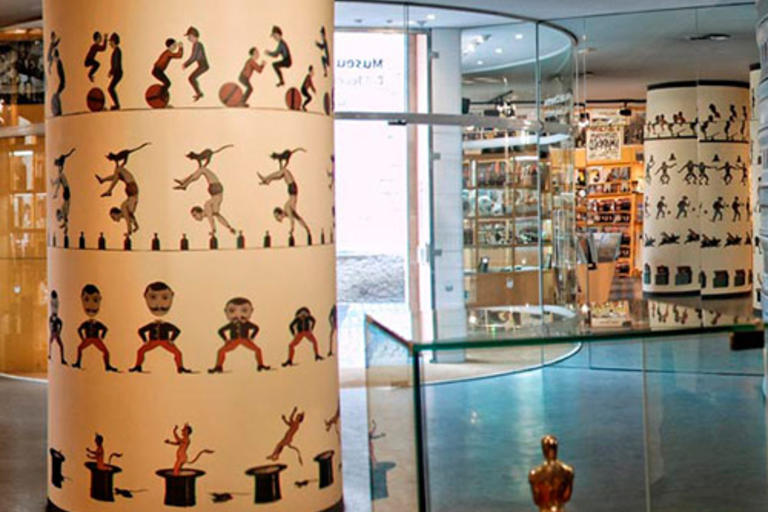

Visita · Girona
Ocupa l'antiga Casa de les Aigües, en un indret cèntric del Mercadal, i s'hi exhibeix la valuosa col·lecció Tomàs Mallol de precinema, des de les primeres imatges en moviment del teatre d'ombres…